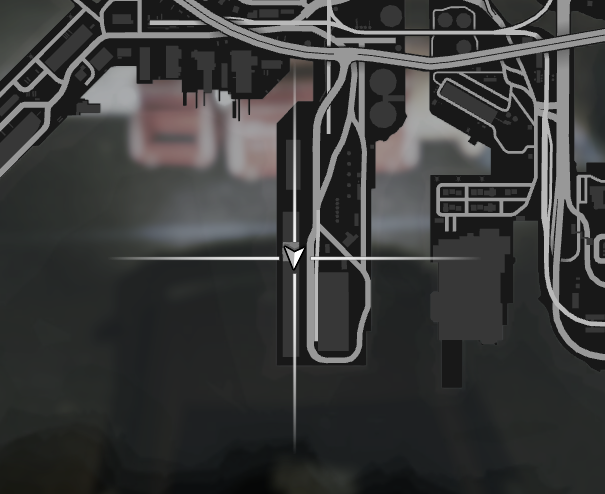
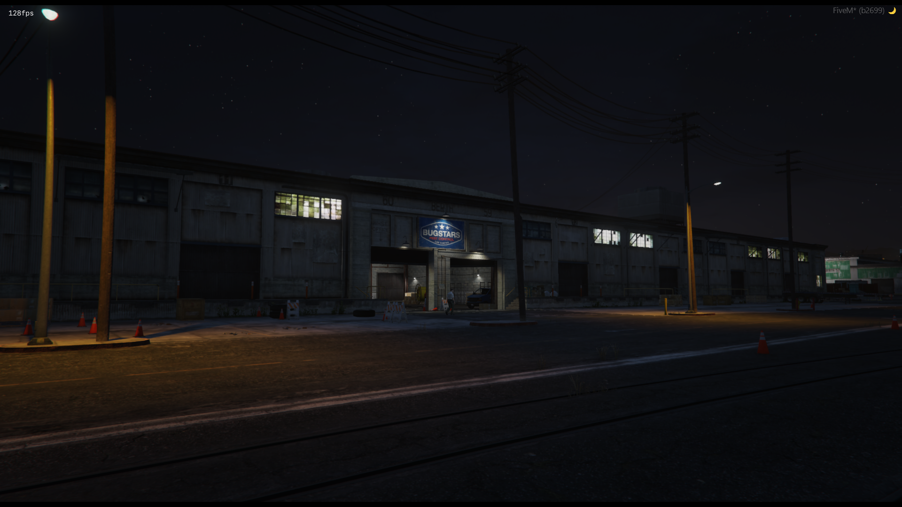
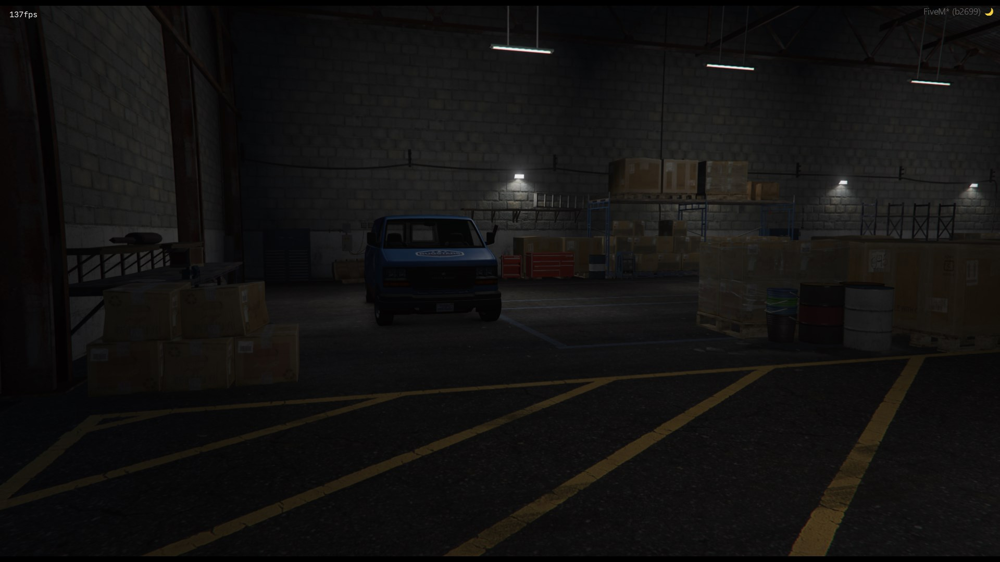
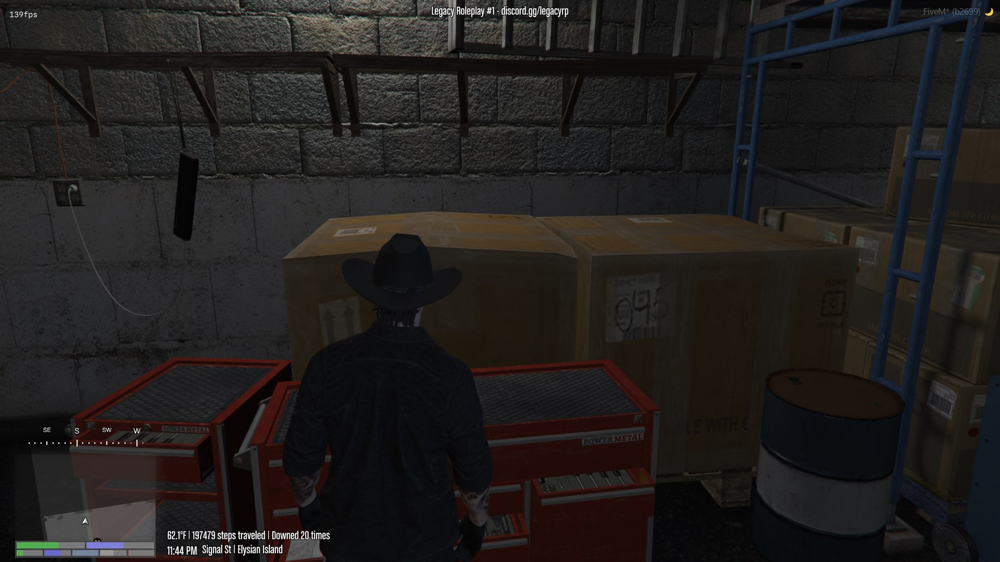

Deconstructing Shotguns is a good way of getting rid of an old or broken weapon without throwing it away and also getting some materials back that could be sold
1. Make sure you have Shotgun(s) to scrap
2. Head over to the deconstructing table
**The table can be found down at the docks inside of a Bugstars
Picture of the location on a map:

Pictures of the location


Picture of the table:

Once you got your materials, enjoy! You can return to the main website with the button located at the top left. Or click here!
Out of all the types of weapons that can be deconstructed, shotguns alongside rifles give you the most amount of materials back.